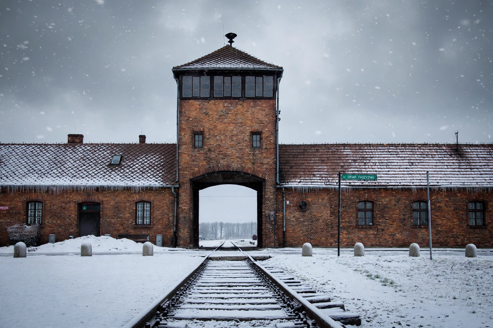

The Holocaust was the genocide of European Jews during World War II. Between 1941 and 1945, Nazi Germany and its collaborators systematically murdered some six million Jews across German-occupied Europe - around two-thirds of Europe's Jewish population. The murders were carried out primarily through mass shootings and poison gas in extermination camps, principally Auschwitz-Birkenau, Treblinka, Belzec, Sobibor, Chelmno and Majdanek. Jews were also killed amid pogroms, under grinding conditions in ghettos, and on death marches.

The gate of Auschwitz II-Birkenau, the largest extermination camp.
| The Holocaust | |
| Date | 1941-1945 |
|---|---|
| Location | German-occupied Europe |
| Perpetrators | Nazi Germany and its collaborators |
| Victims | c. 6 million Jews; also Roma, Poles, Soviet POWs, disabled people, and others |
| Key sites | Auschwitz, Treblinka, Belzec, Sobibor, Chelmno, Majdanek |
| Aftermath | Nuremberg trials; recognition of the crime of genocide |
The Nazis came to power in 1933 under Adolf Hitler and progressively stripped Jews of rights, notably through the Nuremberg Laws of 1935 and the Kristallnacht pogrom of November 1938. After the invasion of Poland in 1939, Jews were confined in ghettos. Following the invasion of the Soviet Union in June 1941, Einsatzgruppen mobile killing squads and their auxiliaries shot more than a million Jews, including 33,771 at Babi Yar near Kyiv in two days in September 1941. In January 1942 senior officials at the Wannsee Conference coordinated the "Final Solution" - the deportation of Europe's Jews to extermination camps in occupied Poland, where most were killed in gas chambers on arrival.
Nazi persecution also murdered hundreds of thousands of Roma, at least 250,000 disabled people in the Aktion T4 and related programmes, millions of Soviet prisoners of war, around 1.8-1.9 million non-Jewish Poles, and thousands of gay men, Jehovah's Witnesses, political opponents and others. Broader usage varies over which groups the term "Holocaust" encompasses.
As Allied forces advanced in 1944-45 they liberated the camps, exposing the atrocities to the world. Surviving leaders were tried at Nuremberg for crimes against humanity; the genocide scholar Raphael Lemkin's term "genocide" entered international law with the 1948 Genocide Convention. Individuals such as Oskar Schindler, who saved some 1,200 Jews, are honoured by Yad Vashem as Righteous Among the Nations. The Holocaust remains central to historical memory, commemorated annually on International Holocaust Remembrance Day, 27 January - the date of Auschwitz's liberation.